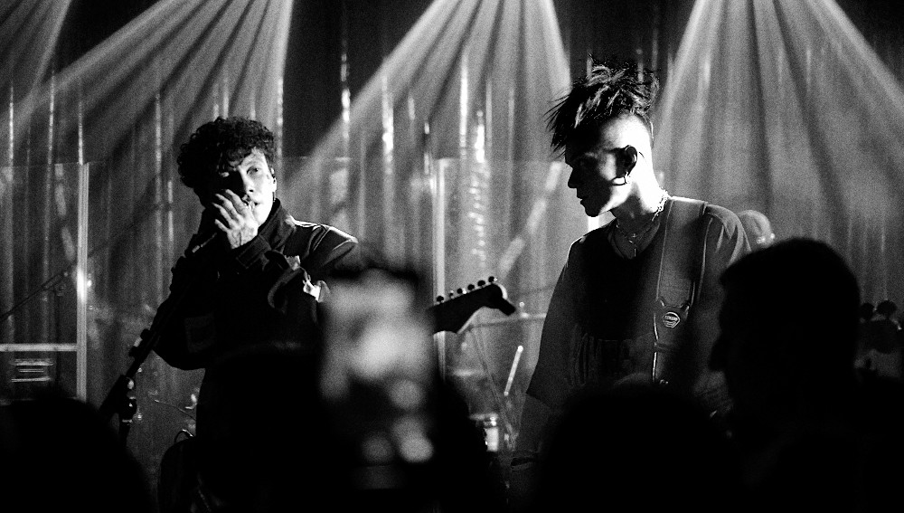

"Три дня дождя" сегодня
Весна 2021
Ранней весной 2021 года в России запустили программу Sportify, призванную поддерживать молодых исполнителей. Первыми участниками платформы стали «Три дня дождя», дуэт «Сестры» и рэпер Rocket. Уже через месяц для проекта Викторова Sportify стала главной площадкой — 70 % аудитории группы слушали ее музыку именно через эту программу.
О новом альбоме
4 июня 2021 года группа выпустила полноформатный альбом «Когда ты откроешь глаза» и сопроводила его приветствием «Добро пожаловать в русский рок». Фото обложки сборника «Три дня дождя» выложили в инстаграм-аккаунте. В составе новинки не только сольные хиты, но и фиты, в частности песня «Вода», выпущенная в коллаборации с Муккой в качестве анонса альбома.
Пополнение дискографии участники коллектива, возрождающего, по мнению критика Алексея Мажаева, триаду «секс, наркотики и рок-н-ролл», отметили визитом на программу «Вечерний Ургант» 8 июня 2021-го и концертом в московском клубе Lookin Rooms 13 июня.